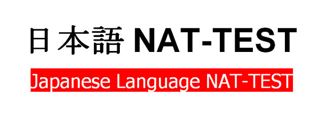
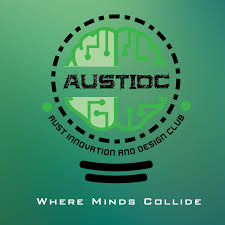
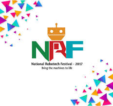
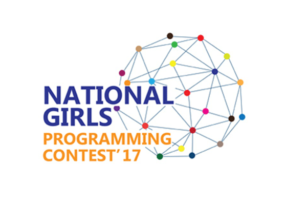

Activities
-

Shilpanudan
April-May 2020
Shilpanudan was a small 1 month social service campaign. A small step taken by me and my friends as members of the society, in order to help the poor people during this pandemic. In this 1month we took orders for digital illustrations worth of minimum 300 BDT, and the amount collected through our artworks, was then distributed among the poor people. We worked in collaboration with HYLO who helped us in distribution of the money among the poor people. I was the co-founder and an artist of this event.
-

Passed NAT N4
February 2020
The Japanese Language NAT Test is an examination that measures the Japanese language ability of students who are not native Japanese speakers. There are 5 levels of NAT Test. I sat for the 1st NAT Test(2020) and passed it.
-
BJET Training
November 2019 - January 2020
B-JET(Bangladesh Japan IT Engineer Training Program) is a special training program funded by JICA in collaboration with Bangladesh ICT Division to enhance job opportunity in JAPAN for excellent ICT engineers in Bangladesh.It gives training on Japanese language skills, business manners and ICT. Japanese language is a requirement to get better opportunity in japanese market. Hence, the program targets to train the trainees to N4 level.
-

Internship at Grameenphone
September 2019-October 2019
I was an intern at the Financial Services department. Grameenphone Financial services conducts a broad range of more specific activities that manage money, including credit unions, banks, credit-card companies, insurance companies, bulk payments,billing,etc. Their product is GPay mobile app through which they conduct these services. My main responsibilities were:
- UI Designing of Gpay Website
- Data Analysis and Reporting
Completed Bachelors in CSE
July 2019
After 4 long years, I finally graduated from the department of CSE. It was indeed a roller coaster ride with lots of ups and downs. But in this process I learnt and grew and became who I am today. I am grateful to my teachers who were very supportive and friendly. Without their suppport and guidance, it wouldn't have been possible.
Passed ITEE FE Level-2
April 2019
ITEE-FE Examination (April 2019) is conducted by Ministry of Information and Communication Technology, Bangladesh in collaboration with Ministry of Economy, Trade and Industry [METI], Japan. I was among 45 full passers countrywide.
Organized MindSparks
January 2019
It was the first National event organized by AUST Innovation and Design Club in collaboration with Cognizance, IIT Roorkee. Students from all over Bangladesh participated in this event. My responsibilities were:
- To promote the event
- To deal with the campus ambassadors from different universities
- To manage volunteers and assign tasks to them
Public Co-ordinator, AUST IDC
March 2017 - January 2019
AUST Innovation and Design Club is the only tech platform in Ahsanullah University of Science and Technologies. It unites students from all departments under one roof. It conducts various workshops and seminars guiding and preparing students for the IT Industry. Besides, it holds various competitions and events for the students. My responsibilities as Public Co-ordinator in the club were:
- To anchor and manage seminars, workshops and events conducted by the club
- To maintain public relation with the other universities
- To organize MindSparks'19, first national event from AUST IDC
Champion in Game Developement, NRF
December 2017
I won the National Robotech Festival in the Game segment under the Software category. Made a game called "Amar Bondhu Rashed" for kids inspired from the book of honorable author Zafar Iqbal sir. There were several stages in the game where Rashed was given a task to complete. All the graphics were done by us from scratch.
Placed 19th in Girls Programming Contest
May 2017
National Girls Programming Contest is conducted by Daffodil University every year. In 2017, we participated as AUST_carrots(cz we were out of names). We stood 19th in that contest.